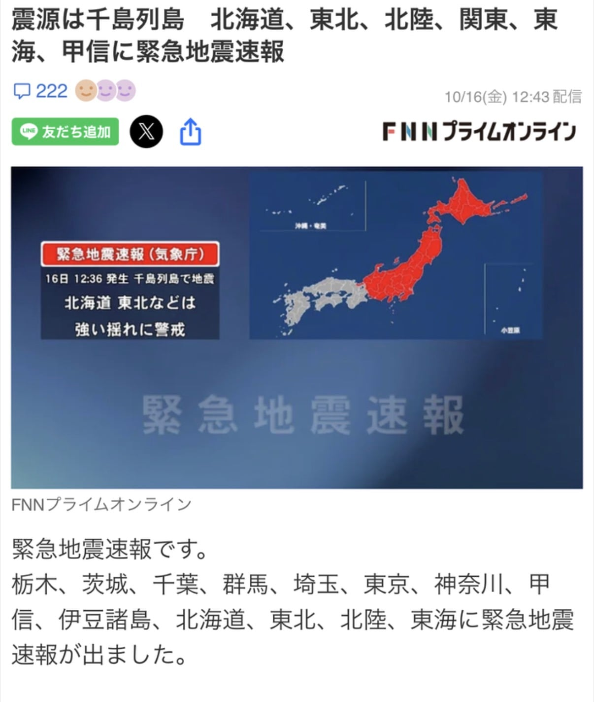

6.9지진을 9.9로 잘못 예측해
나고야부터 홋카이도까지 지진 경보 내렸다가 취소

6.9지진을 9.9로 잘못 예측해
나고야부터 홋카이도까지 지진 경보 내렸다가 취소
진도 10이 지구 쪼개지는 강도 아니었나?
9.9 면 대규모 지각 변동 ㅋㅋㅋㅋ
진짜 10이면 일본 가라앉음
일본이였던것을 만드네
6.9도 엄청쌘디
일/본
도쿄서 뱅기출발하려는데 지진경보 울리길래 뱅기 못뜨는줄 알았다
6.9도 대피수준 아님?
동일본대지진때도 한반도 전체가 몇cm 동쪽으로 밀려났는데 저건 ㅅㅂ ㅋㅋㅋㅋㅋ
그리고 열도가 갈라졌다